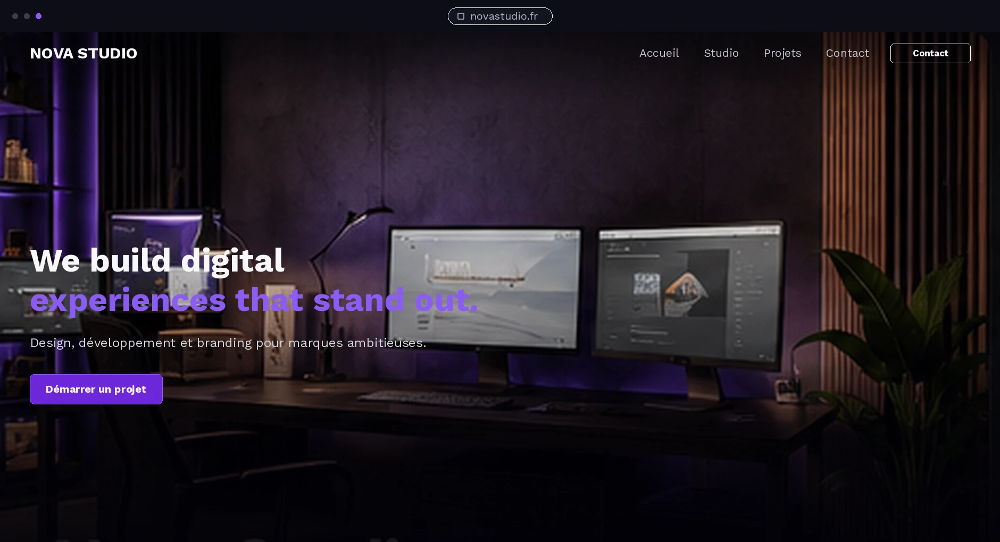

Le challenge
Une agence digitale doit montrer son niveau créatif sans perdre la clarté commerciale. Le visiteur doit comprendre le positionnement et trouver rapidement les expertises.
Une landing page sombre et technologique pour une agence créative, avec une hiérarchie forte et un univers violet maîtrisé.

Une agence digitale doit montrer son niveau créatif sans perdre la clarté commerciale. Le visiteur doit comprendre le positionnement et trouver rapidement les expertises.
Noir profond, violet électrique en accent, typographie massive et environnement de studio réaliste. Les contrastes servent la lecture plutôt que la décoration.
Le desktop donne de l’espace aux visuels et aux expertises. La version mobile simplifie la navigation et garde un CTA principal visible sans surcharger.
Les éléments ci-dessous correspondent au concept. Sur un vrai projet, ils seraient adaptés, connectés et testés selon le besoin.
Ce concept montre une direction possible. Un projet client serait construit avec votre contenu, votre identité et vos objectifs.